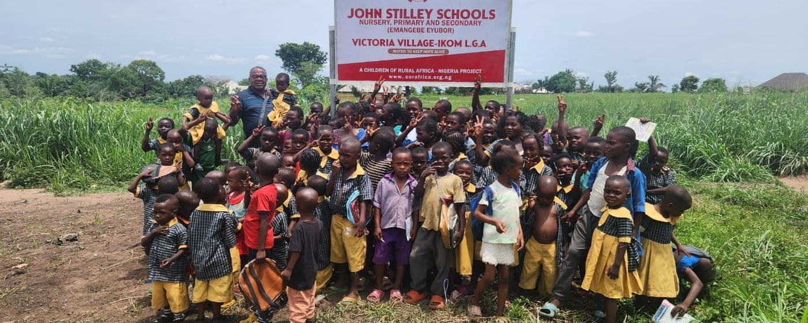

Idum-Mbube, Ogoja
St. Joseph’s Schools and Orphanage, the Sr. Augustina Abuo Memorial Medical Clinic and the CORA Farms — a demonstration of the CEC model. Today it is being handed on.


Hunger, illness and a family with no income take more children out of class than any exam does. So a Community Education Centre runs two programmes, education and healthcare — and builds the school farms, HELP-A-KID, economic empowerment and the skills centres into the education itself, for parents and community members as well as pupils. It takes a village to raise a child.
The Community Education Centre
The Community Education Centre is our answer to a hard lesson: a school on its own does not keep a child in school. Hunger, illness and a family without income take more children out of class than any exam does. This is Education for Africa’s Future.
Inside a centre
A Community Education Centre brings learning, social welfare and empowerment together for the African child, inside the child’s own community — above all for the child who would otherwise have no hope of a sustainable livelihood. It rests on education and healthcare alone. Agriculture, economic empowerment and skills training are not separate programmes but parts of the education itself, so that the whole community gathers its children into a school system that provides for parents as well as pupils.

01
ProgrammeOur primary and secondary schools are centred where children have no educational opportunity at all, and equipped where schools exist but lack the basics. Small classes, good teaching, and a holistic education that grows a child academically, personally and spiritually — with vocational training and skills acquisition at its heart.
02
ProgrammeOur school clinic is built inside the school system, so a child’s health is never the reason they miss class. We concentrate on prevention, early detection, health education, and the treatment of diarrhoeal disease and malaria in the under-fives. We invest heavily in the first 1,000 days of life, the window that sets brain development, growth and immune strength. Child welfare carries the same premium, through HELP-A-KID.

Where the model stands
The model was first built at Idum-Mbube, in Ogoja, and at Victoria, in Ikom. At each, a school, a health centre and a farm were built. Both are working, and both are now being handed to the institutions that will run them from 2027 — which is what they were built for. We intend to replicate the model across Nigeria, beginning in Karu, in Nasarawa State.
St. Joseph’s Schools and Orphanage, the Sr. Augustina Abuo Memorial Medical Clinic and the CORA Farms — a demonstration of the CEC model. Today it is being handed on.
The John Stilley Schools, the Victoria Medical Center and the CORA Farms. Being handed on.
Our next Community Education Centre, recently initiated, near Abuja. Approximately US $2 million will complete it.


How a centre works
Through our Vocational and Skills Acquisition Centres, pilot systems are operated in which children and young people form study teams together with parents, teachers and community members. A skill practised alongside the adults who will employ or finance it is a skill that survives leaving school.
The school provides for parents and guardians as well as pupils, through farming support and micro-credit where it is available.
Trades from computing and fashion design to building, solar installation and farming, taught hands-on.
Each centre is designed to be run by its community and partners, so that CORAfrica can move on and begin the next.
The priority
Our first two centres, at Idum-Mbube and Victoria-Ikom, proved the model, and are being handed to the institutions that will run them from 2027. The next is in Karu, in Nasarawa State. It was recently initiated, and it is where our capital effort is going now.
Approximately US $2 million to complete.
A school at the centre of the Nasarawa community, with education and healthcare as its two programmes and agriculture and economic empowerment built in, for parents as well as pupils.
It is the first step in replicating the model across Nigeria, and it places the work beside the government agencies and partners our plan commits us to working with.
It takes a village to raise a child. This is Education for Africa’s Future.